Reparatie van polypropyleen bumpers die scheuren vertonen welke door de buitenzijde van het polypropyleen zichtbaar zijn en waarbij overspuiten onvoldoende resultaat geeft.
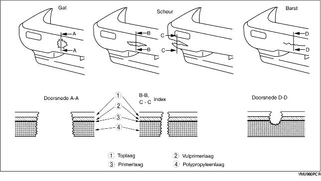
1. Snijd de ruwe randen aan de omtrek van de beschadiging met een mes weg en schuur de omtrek glad. Schuur de randen met een slijpschijf onder ongeveer 45° weg.
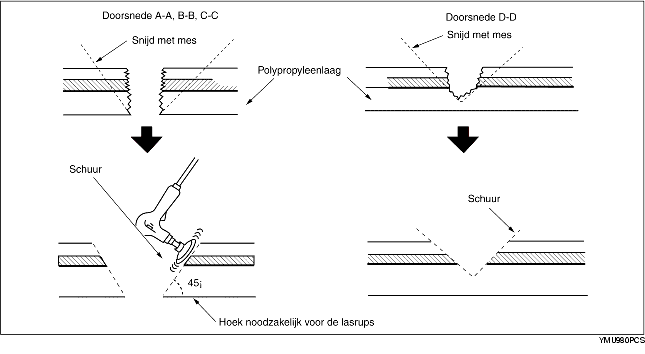
2. Smeltlas het beschadigde deel
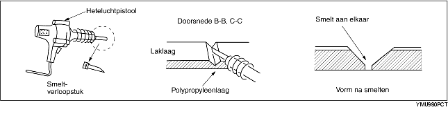
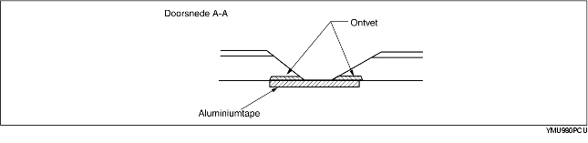
3. Smelt de polypropyleen lasstaaf en vul de scheur hiermee.
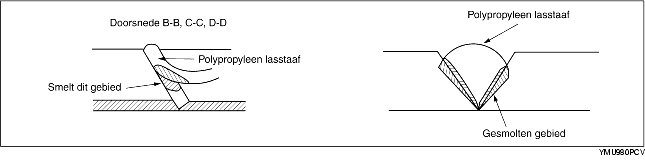
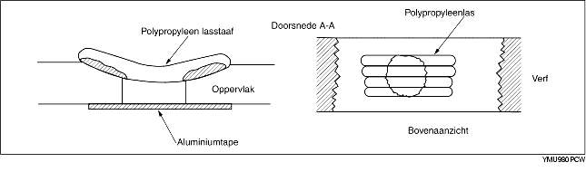
4. Schuur het oppervlak geleidelijk glad. Bij hard schuren zal het polypropyleen smelten tengevolge van de warmteontwikkeling van het schuren. Schuur het gedeelte waarop reparatiemiddel wordt aangebracht.
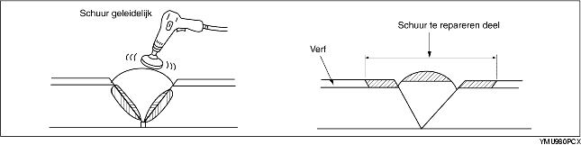
5. Breng met een kwast een gelijkmatige laag polypropyleenprimer aan op het te repareren deel. Laat de primer de bestaande laklaag overlappen. Ca. 10 minuten bij 20 °C {68 °F} laten drogen.
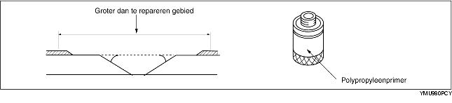
6. Meng het reparatiemiddel en de harder in een verhouding van één op één. Breng dit middel aan op de reparatieplek.
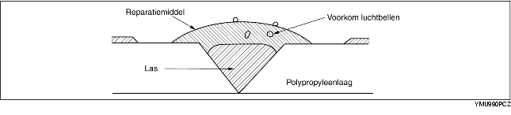
Het reparatiemiddel is een 2-componenten kunsthars.
Na het uitharden kan het uitstekend bewerkt worden en heeft het dezelfde flexibiliteit als de bumper zelf had.
Het reparatiemiddel voor een urethaan bumper is een 2-componenten plamuur. Dit verschilt echter wezenlijk van het reparatiemiddel voor polypropyleen bumpers. Als het verkeerde middel wordt gebruikt, zal de reparatie niet correct uitgevoerd kunnen worden.
7. Schuur het gebied met #180-240 schuurpapier.
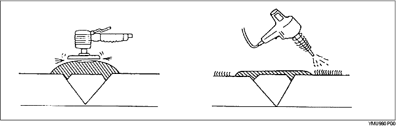
8. Ontvet het gehele oppervlak.
9. Meng de vulprimer en de harder in een verhouding van één op één. Breng de vulprimer met de spuit of een kwast aan op de reparatieplek.
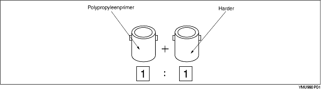
Gebruik de vulprimer binnen 16 uur na het mengen.
10. Laat het geheel drogen.
11. Meng de urethaanprimer en de weekmaker en spuit de gerepareerde plek.
12. Aan de lucht laten drogen bij 20°C {68°F}: minimaal 8 uur
Geforceerd drogen bij 60°C {140°F}: 1 uur
13. Schuur de complete oppervlakte van de bumper met #400-#600 schuurpapier. Schuur niet door de primer heen tot op het polypropyleen. (Zowel nat als droog schuren is toegestaan.)
14. Reinig de gehele oppervlakte van de bumper met ontvetter. Veeg het daarna snel met een droge doek schoon.
15. Breng de kleurlak aan over de gehele bumper.
16. Aan de lucht laten drogen bij 20°C {68°F}: minimaal 8 uur
Geforceerd drogen bij 60°C {140°F}: 1 uur